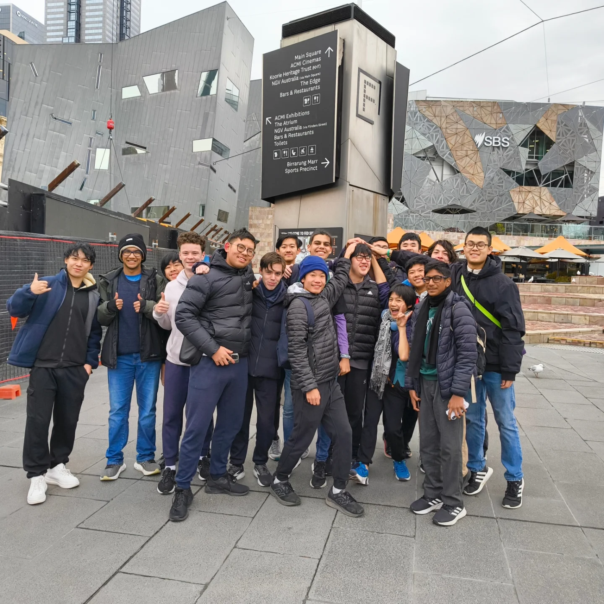
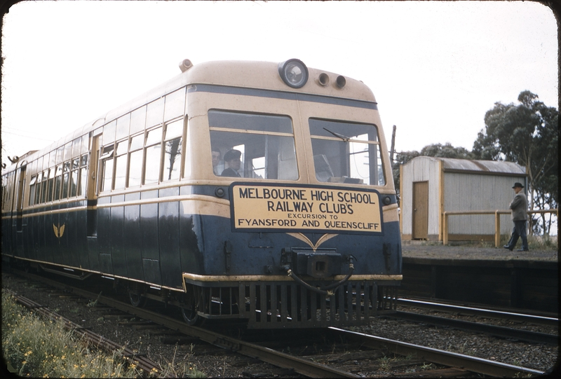

About the Railway Interest Group
The largest student-run organisation at Melbourne High School. We serve the School community through meetings, events, Year 9 Transition and local advocacy.
The largest student-run organisation at Melbourne High School. We serve the School community through meetings, events, Year 9 Transition and local advocacy.
The Melbourne High School Railway Interest Group (RIG) brings together students with an interest in railways, transport systems, infrastructure and history.
Through excursions, meetings and advocacy, the club offers countless opportunities to get involved in its community.

Members during a recent excursion.
The Railway Interest Group traces its roots back to 1955, when it was formed as the Melbourne High School Railway Club. It was formed with 30 members, with Mr Newell serving as the club's Teacher Liaison. The Club focused on three main activities Discussions on railway matters during meetings at the School, excursions on both regular rail services and charter trains, and the creation of a model railway in what is now Room T1. Typical excursion destinations included Newport Workshops, Fyansford, and Ballarat. A monthly newsletter, titled The Bulletin, was published.
In 1956, the Club's second year, a Club Committee was formed to oversee the Club's activities. The model railway was finished in this year. Guest speakers from the Victorian Railways spoke at a Club meeting, showing footage of the electrification and duplication of the Gippsland Line. The students also began volunteering at Puffing Billy, joining the Scotch College working groups on the line. Notably, Philip A’Vard and Graham Watsford, who both left MHS in the early 1950s before the formation of the Railway Club, were already active members at Puffing Billy.
Two more regular excursions were added to the programme, South Yarra Signal Box (abolished in 1960, putting an end to a local and popular trip) and Train Control at the Spencer Street Headquarters of Victorian Railways. A trip to Alexandra had to be cancelled again, with a substitute of Ballarat or Bendigo planned instead. The model railway was expanded to a terminal station and was on display on the School’s Open Day.
In 1957 Mr Maher took over from Mr Newell, who had left the School the previous year. The club organised several working parties to assist Puffing Billy. Mr Murray from Puffing Billy was also a Guest Speaker at a meeting. The excursion programme continued, as did work on the model railway.

Historical images and excursions remain an important part of the club’s identity.
The Railway Club faded into the Club Scene at Melbourne High School, disappearing over time. In 2021, Rayyaan Khaleel founded the modern-day Railway Interest Group, supported by just eight Year 9 students. The Railway Interest Group has since become the largest student club at Melbourne High School, with excellent opportunities for students to get involved in the community.
The Railway Interest Group aims to make student life more enjoyable, through a common interest of railways and public transport. Aside from weekly meetings and club events, RIG is also responsible for the Year 9 Welcome Day in October each year, as well as organising travel briefings on Year 9 First Day. We also offer Year 10 students opportunities to complete their community service at Newport Workshops, and offer some work experience placements at transport companies.
Club excursions across Victoria’s railway network, including infrastructure tours and heritage operations.
Members document trains, stations and railway infrastructure through photography.
The Railway Interest Group advocates for a safer Yarra St, as well as an accessible Route 58.
Discussions about public transport projects, infrastructure and railway operations.
The Railway Interest Group welcomes all students. No prior knowledge is known or expected - your passion and dedication matters much more!
Contact Us